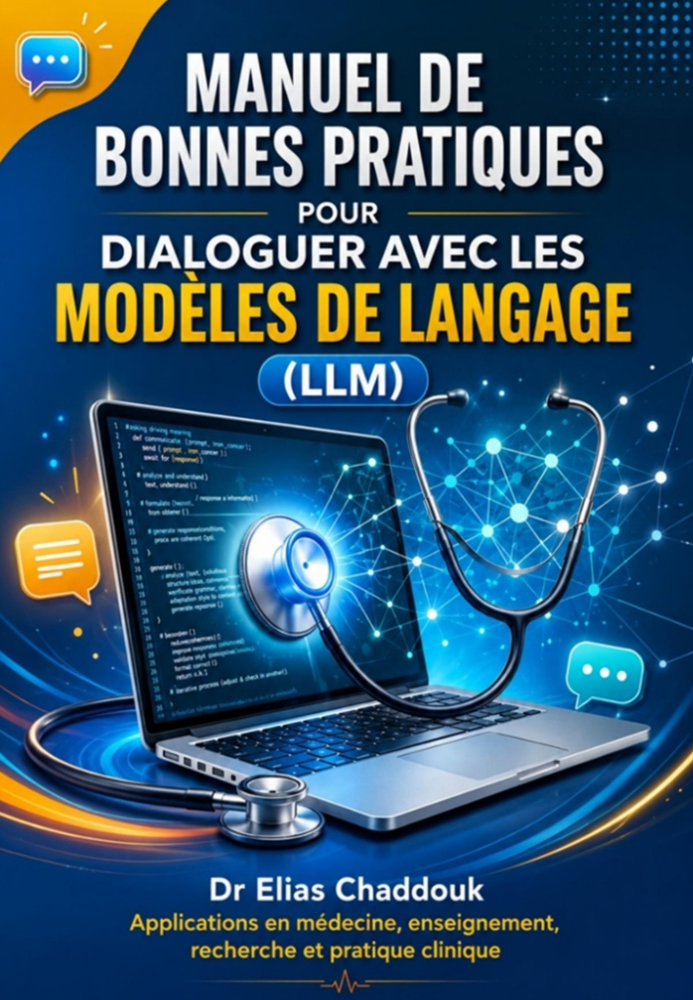

01
Pratique clinique
Rédaction assistée de courriers, structuration des antécédents, préparation de synthèses de RCP et préservation stricte des négations et valeurs critiques.
Applications en médecine, enseignement, recherche et pratique clinique. Le guide méthodologique de référence conçu par un médecin pour maîtriser l'intelligence artificielle sans compromettre la rigueur clinique ni la sécurité des données.
Recevez par e-mail la date de sortie officielle, les premiers extraits et les modèles de consignes.
Vos coordonnées sont strictement réservées au suivi de la parution.

Directement issues du sous-titre du manuel, quatre déclinaisons concrètes pour le quotidien du soignant, de l'interne et de l'universitaire.
Rédaction assistée de courriers, structuration des antécédents, préparation de synthèses de RCP et préservation stricte des négations et valeurs critiques.
Conception de cas cliniques progressifs, génération ciblée de QCM d'entraînement pour internes et contextualisation pédagogique de cours universitaires.
Synthèse d'articles scientifiques, extraction méthodologique des résultats sans hallucination de sources et distinction stricte faits / hypothèses.
Minimisation des données de santé, environnement autorisé, limites effectives du label HDS et protocoles de validation humaine systématique.
Un assistant personnalisé n'est pas un nouveau modèle réentraîné : c'est un cadre de travail stabilisé associant prompt maître, sources documentaires sélectionnées, commandes contextuelles et procédures réutilisables.